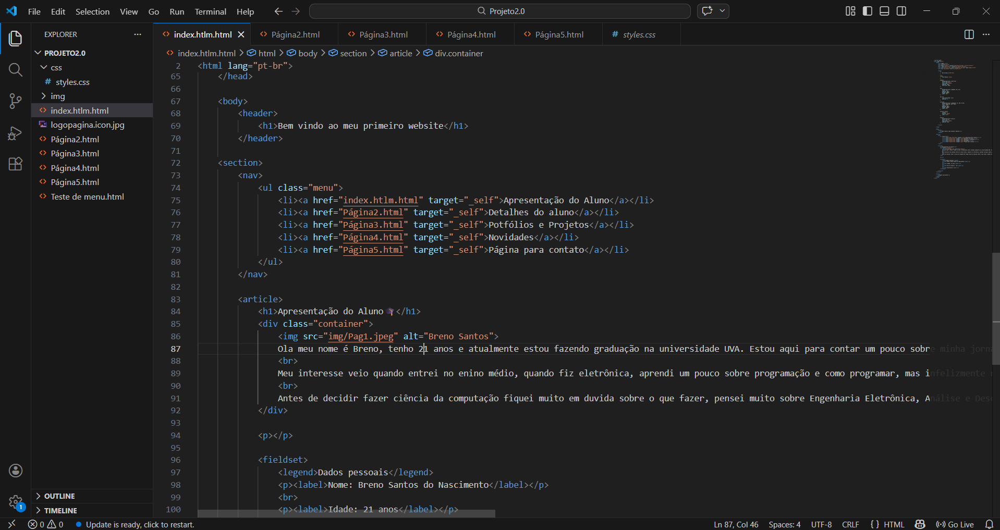

Novidades

- Março de 2026: Iniciando oficialmente a graduação em Ciência da Computação na Universidade Veiga de Almeida! Ansioso para as disciplinas de Algoritmos e Desenvolvimento Web.
- Update v1.2: Melhorei a usabilidade do menu lateral transformando os links em blocos roxos clicáveis, ajestei os detalhes dos tamanhos das letras e imagens.
- Update v1.3: Melhorei a versão dos links dos contatos, no inicio estava links normais em lista não ordenada, a ideia de melhorar e criar uma div veio ao longo da semana para deixar o website um pouco mias bonito e apresentavel para a pessoa que for ver.
- Update v1.4: Ajustei a foto da ultimna página para que não ficasse um fundo diferente da página, fiz uma foto animada minha para deixar un pouco mais bonita a última parte e não simples.